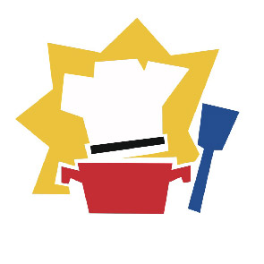
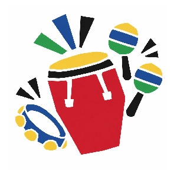
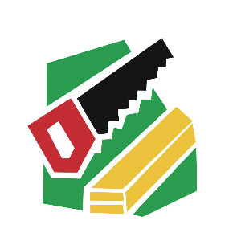
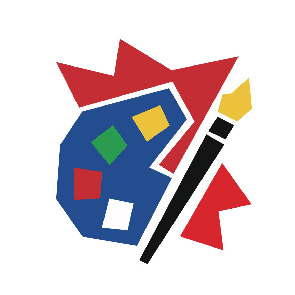
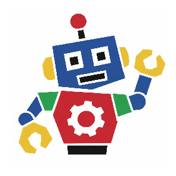

01 / CREAR
Cocina Creativa
Experimentamos con sabores, descubrimos recetas y desarrollamos la creatividad. Aprendemos técnicas, trabajamos en equipo y compartimos cada preparación.
En el Molino hay un espacio para cada idea, interés y curiosidad. A través de diferentes talleres, invitamos a niños y jóvenes a aprender, experimentar y descubrir nuevas habilidades. Son espacios de encuentro donde la creatividad, el compañerismo y el aprendizaje van de la mano.
Cada espacio es una oportunidad para descubrir algo nuevo.

Experimentamos con sabores, descubrimos recetas y desarrollamos la creatividad. Aprendemos técnicas, trabajamos en equipo y compartimos cada preparación.

Descubrimos el mundo de los ritmos y sonidos a través de distintos instrumentos. Trabajamos la coordinación, la escucha y la expresión musical.

Creamos y construimos con nuestras propias manos. Exploramos técnicas de trabajo en madera y realizamos diferentes proyectos y objetos.

Exploramos diferentes materiales y técnicas para expresarnos. Desde la cerámica y el dibujo hasta la creación de objetos y propuestas de carnaval.

Nos acercamos a la tecnología de forma creativa. Exploramos la programación, la construcción y la resolución de problemas mediante experiencias prácticas.
Un lugar para aprender, compartir, experimentar y dejar volar la imaginación.